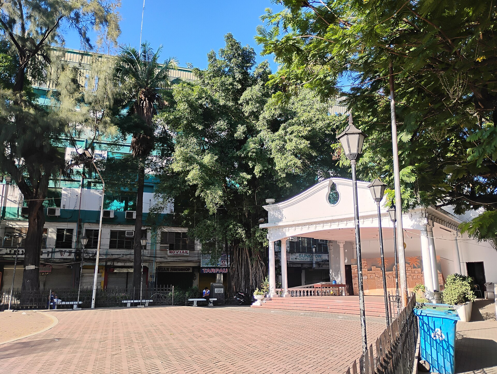
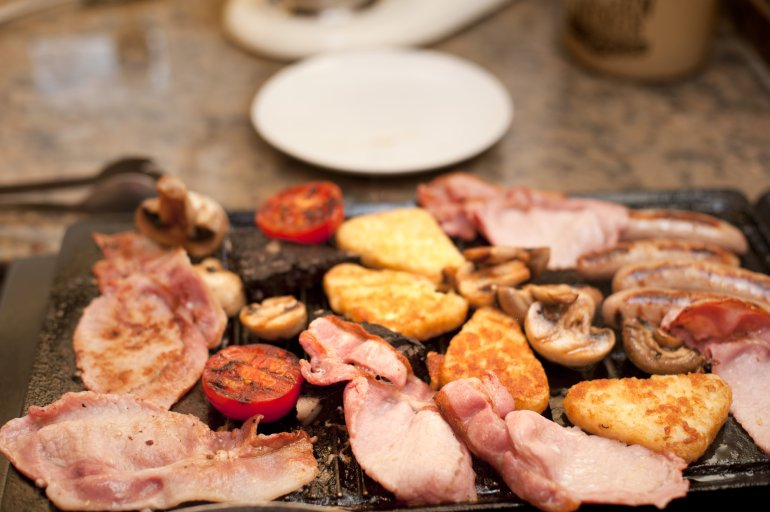
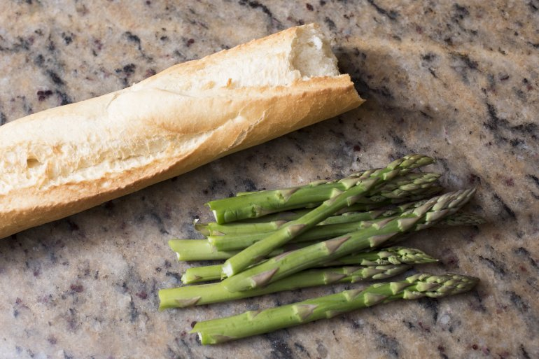

Station 01
Culinary
Mise en place, ingredient prep, knife work, dishwashing, and all-rounder kitchen support. Working a station cleanly, pacing with the line, and keeping the pass moving.
Hospitality Management student trained from kitchen line to front desk — food preparation, plating, guest service, and hotel operations with a standard of care that shows up in every cover, every room, every guest.
A Spanish-tinged port city on Mindanao's southern tip — vintas on the water, kitchens that never sleep, guest service raised on warmth. Home base for the work, the training, and every shift that shaped this résumé.

Mise en place, ingredient prep, knife work, dishwashing, and all-rounder kitchen support. Working a station cleanly, pacing with the line, and keeping the pass moving.

Service flow from open to close — setup, beverage service, clearing, and maintaining F&B equipment. Turning covers without losing the warmth that makes a guest come back.

Guest Relations, check-in & check-out flow, communication systems, and escalation to supervisors. First voice on the phone, first smile at the desk.
Room readiness, public-area upkeep, and regular inspection of cleaning equipment. Documenting issues, partnering with supervisors, keeping standards above the guest's eye-line.
Ran guest relations at the front desk — check-in flow, PBX and in-house communication, and concierge-style requests. Supported culinary rotations when needed and escalated equipment or service issues to supervisors for prompt resolution.
Worked F&B service — station setup, covers through the rush, and resetting between seatings. Conducted regular inspection and maintenance of service and cleaning equipment, identifying issues early and surfacing them to supervisors.
In the kitchen: mise en place, ingredient prep, hot and cold side support, plating assistance, and dishwashing through service. Kept stations stocked, sanitation above standard, and the pass moving so the team never broke rhythm.
Maintained public-area cleanliness to hotel standard, handled routine upkeep of housekeeping equipment, and documented faults for supervisor action — keeping lobbies, corridors, and common spaces guest-ready through the day.
Guiwan, Zamboanga City, Philippines 7000
Available for opportunities